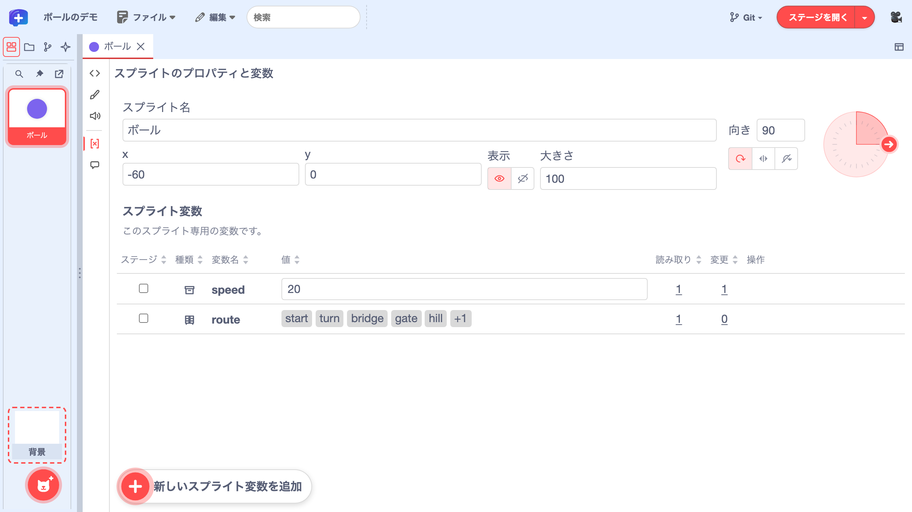
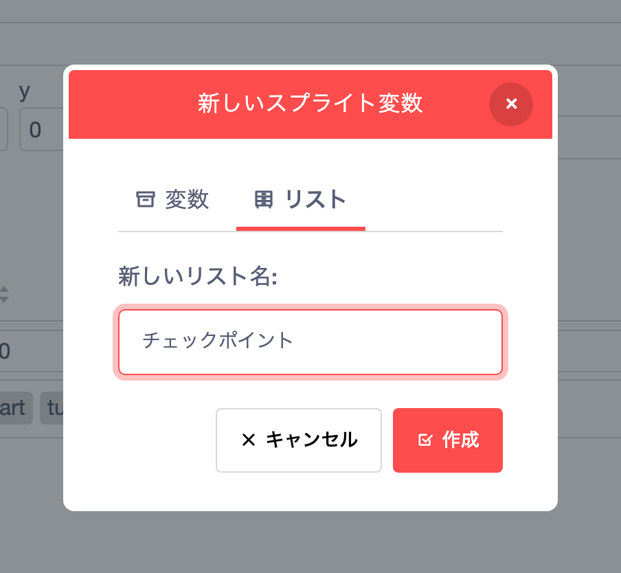
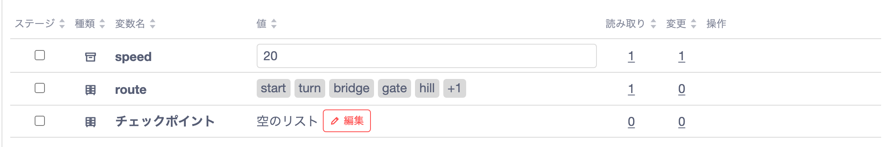
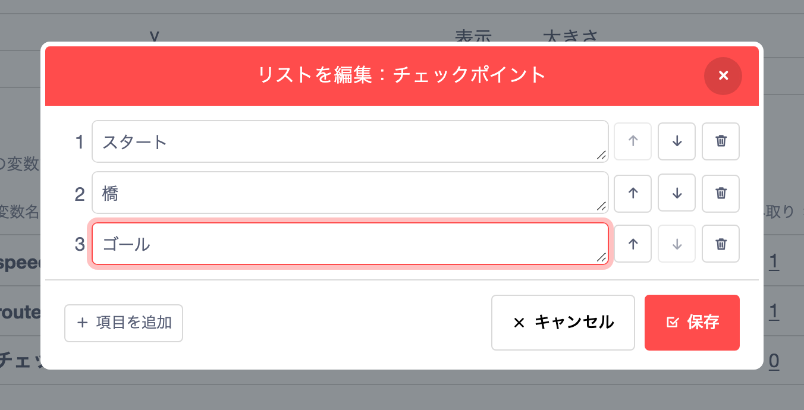
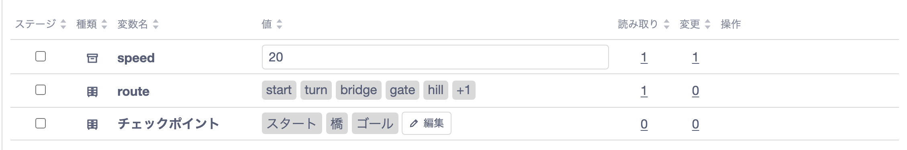

Scratchから使い始めるTurboWarp Plus Editor
いつものSB3ファイルを開いて、コードの横でステージを動かしてみましょう。このガイドでは「ボールのデモ」を使い、慣れたブロックで作品を編集しながら、TurboWarp Plus Editorのどこに何があるか、スプライトが増えたときの探し方、作業しやすい画面の整え方を順に試します。
- Ball Demo.sb3は1.1〜1.2で使います。緑の旗を押すと、ボールが20歩進むだけのデモです。
- Ball Demo Plus.sb3は1.3以降で使います。同じデモに、変数・リスト・メッセージ・クローンを加えたものです。
1. Scratchで使っていた画面はどこにある？
1.1 SB3を開く
ふだんは自分の作品のSB3ファイルを開きますが、ここではBall Demo.sb3をダウンロードして使います。
「ファイル」→「SB3ファイルを開く…」を選び、ダウンロードしたファイルを開きます。画面左端のスプライト一覧で「ボール」を選ぶと、中央の編集パネルにそのスプライトのタブが開きます。

1.2 ステージを開く
右上の「ステージを開く」の横の▾を押し、「引出しで表示」を選びます。右側に開いたステージで緑の旗を押すと、コードを見ながらボールの動きを確かめられます。「20 歩動かす」ブロックの20を40に変えると、旗を一度押したときに進む距離が2倍になります。ステージを大きく表示したいときは、同じメニューの「別ウィンドウで表示」を選びます。


1.3 画面左端のスプライト一覧を使う
ここからはBall Demo Plus.sb3を開いて使います。Scratchでは画面右下にあったスプライト一覧が、このエディターでは画面左端にあります。左上のアイコンで別の表示（「プロジェクトフォルダ」など）に切り替わっているときは、いちばん左の「スプライト一覧」アイコンを押して戻します。
一覧とコードの間の境界を左右にドラッグすると、一覧の幅を変えられます。スプライトが多い作品では、幅を広げるとタイルが複数列に並びます。一覧の上部にあるピン（「スプライト一覧を固定表示」）を押すと、一覧が固定されます。固定を外すと、ポインターが一覧から離れたときに一覧が畳まれ、ポインターを画面の左端に戻すと再び開きます。
一覧を別のウィンドウに出したいときは、ピンの横の「アンドック」を押します。別ウィンドウの一覧からもスプライトを選べます。一覧を元の位置に戻すには、別ウィンドウ右上のボタンを押します。別ウィンドウに出していた一覧のウィンドウが見つからないときは、同じボタンが「別画面で開き直す」になり、押すと別ウィンドウを開き直せます。
1.4 スプライトや背景をタブで開く
左端の一覧でスプライトや背景を選ぶと、編集パネルの上部にそれぞれのタブが開きます。「ボール」を開いたまま、一覧の下にある「背景」を選んでみましょう。上部の「ボール」と「背景」のタブを押すだけで、編集する対象を切り替えられます。パネルを分割すれば、2つのタブを横に並べて編集することもできます（4.4）。
1.5 左端のボタンで編集画面を切り替える
編集パネルの左端には、上から「コード」「コスチューム」「音」「変数など」「メッセージ」のボタンが並びます。背景のタブでは、「コスチューム」が「背景」に、「変数など」が「グローバル変数」に変わります。どのボタンか分からないときは、ポインターを重ねると名前が表示されます。コスチュームや音の画面では、パネル上部の見出しにも画面の名前が表示されます。
「ボール」のタブで筆のアイコン（「コスチューム」）を押すと、紫のボールのコスチュームを編集できます。スピーカーのアイコン（「音」）を押すと、同じスプライトの音の画面に切り替わります。このデモには音が入っていません。ブロックに戻るには、左端の「コード」を押します。


2. スプライトのプロパティと変数を使う
2.1 プロパティで位置・表示・向きを変える
「ボール」のタブで、左端の[x]のアイコン「変数など」を押すと、「スプライトのプロパティと変数」が開きます。上部では、スプライト名、位置（x・y）、大きさ、向きを編集できます。「表示」の目のアイコンで表示、斜線付きの目のアイコンで非表示に切り替えます。変更の結果はステージで確かめられます。ステージの引出しが右側の操作に重なるときは、いったん右端に畳んでください。

右端の向きのダイヤルで、円周上の矢印を右（90°）から上（0°）へドラッグします。ボールは丸いので見た目は変わりませんが、緑の旗を押すと、右に進んでいたボールが上に進むようになります。向きは「向き」の数値欄に入力しても変えられます。その下の3つのアイコンでは、回転方法を「自由に回転」「左右のみ」「回転しない」から選びます。次の練習の前に、向きを90、位置をx = −60、y = 0に戻しておきます。

2.2 変数の値を変え、その変数を使うブロックを表示する
同じパネルの「スプライト変数」には、ボールだけが使う変数やリストが並びます。ボールの進む距離を決めるspeedを20から40に書き換え、Enterキーで確定します。緑の旗を押して進む距離を比べたら、次の練習に備えてspeedを20に戻しておきます。
「読み取り」列の数字を押すと、その変数の値を読み取るブロックだけが、メニューバーの検索結果に表示されます。speedの「読み取り」の1を押して結果を選ぶと、緑の旗のスクリプトで「歩動かす」ブロックに入っているspeedが表示されます。「変更」列の1からは、クローンのspeedを変えるブロックへ移動できます。行にポインターを重ねると、「変数名を変更」と「変数を削除」のボタンが現れます。

作品全体で共有する変数を見るには、スプライト一覧の下にある「背景」を選び、「グローバル変数」を開きます。roundsの行の「ステージ」列にチェックを入れると、実行中の値がステージに表示されます。

2.3 リストの中身をまとめて編集する
「ボール」のタブに戻り、左端の「変数など」を開きます。
表の「種類」列では、変数は箱のアイコン、リストは表のアイコンで示されます。「種類」や「読み取り」などの見出しを押すと、その列で表を並べ替えられます。routeは、クローンが吹き出しで言う言葉を入れたリストです。表には先頭の5項目が並び、+1は残りがあと1項目あることを示します。
routeの行にポインターを重ね、「編集」を押します。

「リストを編集：route」ダイアログが開きます。1番目のstartをcheckpointに書き換えます。続けて、3番目のbridgeの右にある上向き矢印を押すと、bridgeが2番目に上がります。ごみ箱のアイコンで項目を削除し、「項目を追加」で項目を増やすこともできます。変更をやめるときは「キャンセル」を押します。

右下の「保存」を押すと、表のrouteの行がcheckpoint→bridge→turnの順で始まります。この変更をファイルに残す手順は、4.7 編集した作品をSB3で保存するを参照してください。

新しいリストを作り、項目を追加する
パネルを開く。「ボール」のタブで「変数など」（左端の[x]のアイコン）を開き、パネル左下の「新しいスプライト変数を追加」を押します。

図17 · ボールの変数パネルの左下に「新しいスプライト変数を追加」がある リストに名前を付ける。「新しいスプライト変数」ダイアログで「リスト」タブを選び、「新しいリスト名」に
チェックポイントと入力して、右下の「作成」を押します。
図18 · 「リスト」タブが選ばれ、新しいリスト名に「チェックポイント」が入っている 空のリストを開く。表に加わった「チェックポイント」の行にポインターを重ね、鉛筆アイコン付きの「編集」を押します。

図19 · 空の「チェックポイント」リストの行に「編集」ボタンが表示されている 項目を追加して保存する。左下の「項目を追加」を押すたびに入力欄が1つ増えます。
スタート、橋、ゴールを順に入力し、右下の「保存」を押します。
図20 · リスト編集ダイアログに「スタート」「橋」「ゴール」が入り、右下に「保存」がある 表で確かめる。「チェックポイント」の行に、3つの項目が入力した順に表示されます。作品をファイルに残すには、SB3で保存します。

図21 · 保存後の「チェックポイント」の行に「スタート」「橋」「ゴール」が並んでいる


作品全体で共有するリストは、背景のタブの「グローバル変数」から同じ手順で作れます。
2.4 クローンを選んで個体ごとの値を見る
「ボール」のタブを開いたまま、1.2と同じ手順でステージを右側の引出しに表示します。ステージの白い部分を一度クリックしてからCキーを押すと、右にもう1つボールが現れます。これがクローン（実行中に作られるスプライトのコピー）です。このクローンは、作られると自分のspeedを10増やし、routeの1番目の言葉を2秒間言います。2.3でリストを編集していれば、吹き出しにはcheckpointと表示されます。
「変数など」を開き、見出しの右にある「1」を押します。パネルに「クローン 1 を編集中」と表示され、speedは30になっています。値を35に変えてから「元のスプライト」に戻ると、元のスプライトのspeedは20のままです。クローンの位置やリストも同じように確かめたり編集したりできますが、クローンへの変更はその実行の間だけ有効です。クローンが6体以上になると、番号の選択リストと左右の矢印で切り替えます。

3. メッセージの流れをたどる
3.1 送ったメッセージを受け取るブロックを表示する
「ボール」のタブで、左端の吹き出しのアイコン「メッセージ」を押します。このスプライトが使うメッセージが「送信」と「受信」に分けて並びます。ボールは緑の旗で動いた直後にball startedを送ります。「ブロック」列には、送るブロックと、そのブロックを含むスクリプトの最初のブロックが表示されます。下線付きのball startedを押すと、コード画面に切り替わり、その送るブロックが表示されます。

受け取る側のブロックを見るには、もう一度「ボール」の「メッセージ」を開き、パネル下部の関係図で矢印の先にある「背景」を押します。背景のタブが開いたら、左端の「メッセージ」を押し、「受信」の下線付きのball startedを押します。コード画面に切り替わり、roundsを1ずつ変える背景のスクリプトの、受け取るブロックが表示されます。
3.2 関係図で送信元と受信先をたどる
パネル下部の関係図「スプライト・背景とメッセージの関係」では、矢印が送信元から受信先へ向かい、矢印の上にメッセージ名が表示されます。今開いている対象には太い枠が付きます。このデモでは、ボール→背景の矢印にball startedが表示されます。
背景の「メッセージ」パネルでは、背景が受け取るメッセージの一覧に加えて、作品全体の送受信が関係図に表示されます。

3.3 メッセージ名を作品全体で変える
ball startedの行にある鉛筆アイコンの「メッセージ名を変更」を押します。入力欄にball movedなどと入力し、隣の「メッセージ名を変更」を押して確定します。メッセージ名は作品全体で共通なので、ボールの送るブロックと背景の受け取るブロックの名前がそろって変わります。関係図に新しい名前を反映するには、いったん「コード」に切り替えてから「メッセージ」を開き直します。名前を変えずにやめるときは「キャンセル」を押します。

4. コードを探す、広げる、使い回す
4.1 パレットと検索でブロックを探す
コード画面の上に並ぶ「動き」などのカテゴリを押すと、その下にブロックの小窓（パレット）が開きます。使いたいブロックを、小窓からコード領域へドラッグします。小窓の右下のハンドルで幅と高さを変え、中をスクロールしてみましょう。小窓の大きさはカテゴリごとにブラウザーに保存され、スクロール位置も作業中はカテゴリごとに保たれます。「見た目」を開いてから「動き」に戻ると、さっきの続きから探せます。


小窓の上の「ブロックを検索」は、そのカテゴリから追加するブロックを探すときに使います。一方、メニューバーの「検索」は、作品ですでに使っているブロックを探すためのものです。元のデモ（Ball Demo.sb3）で「歩動かす」と入力し、結果を選ぶと、ボールのコードの該当するブロックが表示されます。

4.2 ミニマップで離れたコードへ移動する
「ボール」のコード画面にポインターを置くと、右下に小さなコードの地図（ミニマップ）が現れます。地図の中の枠は、今見えている範囲です。Ball Demo Plus.sb3では、緑の旗、Cキー、クローンされたとき、スペースキーの4つのスクリプトが地図に表示されます。
地図の離れた場所をクリックするか、枠をドラッグすると、表示する範囲が移ります。地図の下の−／＋で縮小・拡大できます。コードが長くなっても、どちらへスクロールすればよいか見当がつきます。

4.3 Z配置・N配置でコードを順に読む
コード領域の何もないところを右クリックし、「コードの並びの見え方を変更する」を開きます。「Z配置の見え方」は元の配置を上の段から左→右の順に、「N配置の見え方」は左の列から上→下の順にたどり、スクリプトを縦一列に並べて表示します。離れたスクリプトを順番に読みたいときに便利です。今の見え方にはチェックが付きます。「通常配置の見え方」を選ぶと、元の座標のまま編集する表示に戻ります。


見え方だけでなくブロックの座標そのものを整理するには、通常配置に戻してから、上の「編集」→「コードブロックの再配置」を選びます。「順序」と「方向」を選ぶと、移動後の配置がダイアログ内にプレビューされます。「再配置する」を押すと、プレビューのとおりに移動します。

4.4 パネルを横に分割して並べて編集する
コード画面右上の「編集パネルのレイアウト」→「パネルを横に分割」を選ぶと、同じスプライトのコードが左右2つのペインに並びます。片方で編集した内容はもう片方にも反映されますが、スクロール位置と拡大率はペインごとに変えられます。
大きな作品なら、左に初期化のコードを表示したまま、右でイベントのスクリプトを編集する、といった使い方ができます。ペインを閉じるときは、閉じたい側の「編集パネルのレイアウト」→「この分割パネルを閉じる」を選びます。

4.5 右クリックでスクリプトを別のタブにコピーする
まず、左の一覧で「ボール」を右クリックして「複製」を選び、練習用の「ボール2」を作ります。元の「ボール」のタブで、離れた場所にある「スペースキーが押されたとき」のスクリプトを右クリックし、「コピー」を選びます。次に「ボール2」のタブを開いてコード画面に切り替え、何もないところを右クリックして「貼り付け」を選ぶと、つながったブロックがひとまとまりで追加されます。複製した直後の「ボール2」にも同じスクリプトが1つあるので、貼り付けると2つになります。


4.6 ドラッグでスクリプトを別のスプライトにコピーする
同じ作品の別のスプライトにスクリプトを渡すときは、コードから直接ドラッグしてもコピーできます。
- 左のスプライト一覧を開き、元の「ボール」のタブに戻ります。
- スペースキーのスクリプトのいちばん上の黄色いブロックをつかみます。キーを選ぶメニューを避けて、ブロックの文字のあたりからドラッグを始めます。左の一覧の「ボール2」のタイルに重ね、タイルの表示が変わったところで離します。
- 上の「ボール2」のタブを開いてコードを確かめます。スクリプトのコピーが追加され、元の「ボール」にもスクリプトが残っています。


4.4のようにパネルを分割し、2つのペインに別々のスプライトのコードを表示しているときは、片方のペインからもう片方のペインのコードの上へスクリプトをドラッグしてもコピーできます。
4.7 編集した作品をSB3で保存する
編集を終えたら、作品をSB3ファイルとして保存しましょう。「ファイル」→「名前を変えて保存…」を選び、「名前」に作品名を入力します。「保存形式」で「SB3（現在の格納方式）」を選び、右下の「保存先を選ぶ…」を押して保存先を指定します。

次に進む
作品をフォルダで保存する方法や、GitHubと連携する手順は、次のガイドで紹介しています。